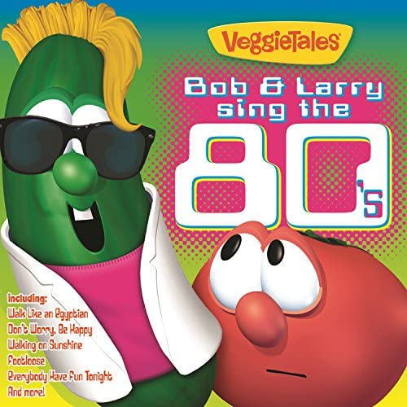

Our albums over the years
1990s
Veggie Tunes
November 21, 1995
- Veggie Tales Theme Song
- God Is Bigger
- Tha Water Buffalo Song
- King Darius Suite
- Oh, No! What We Gonna’ Do?
- We’ve Got Some News
- Fear Not, Daniel
- You Were in His Hand
- We Are the Grapes of Wrath
- Some Veggies Went to Sea
- The Forgiveness Song
- Busy, Busy
- Love Your Neighbor
- The Hairbrush Song
- I Can Be Your Friend
- What We Have Learned
A Very Veggie Chrisrmas
October 22, 1996
- Talking
- Feliz Navidad
- More Talking
- The Boar’s Head Carol
- Still More Talking
- Ring, Little Bells
- Vegetables Talking
- Go Tell It on the Mountain
- More Vegetables Talking
- Angels We Have Heard on High
- Vegetables Talking About Watching a Video
- Can’t Believe It’s Christmas
- Vegetables Talking During a Video
- Grumpy Kids
- Oh Santa!
- Even More Talking
- He Is Born, the Holy Child
- Vegetables Talking to Sheep
- While by My Sheep
- Vegetables Talking to a Polish Caterer
- The 8 Polish Foods of Christmas
- Vegetable Tire of Talking
- The Big Medley!
- The End of the Talking!
- Away in a Manger
Veggie Tunes 2
July 21, 1998, 1999
- Veggie Tales Theme Song
- Dance of the Cucumber
- Good Morning George
- Think Of Me
- The Bunny Song
- The Bunny Song (New & Improved)
- Stand Up!
- Stand Up! (Reprise)
- Love My Lips
- Big Things Too
- The Pirates Who Don't Do Anything
- It's Laura's Fault
- LarryBoy Theme Song
- The Promise Land
- The Lord Has Given
- Keep Walking
- The Lord Has Given (Reprise)
- The Promise Land (Reprise)
- The Song of the Cebú
- What Have We Learned
Larry-Boy: The Soundtrack
July 27, 1999
- Cordial Greetings from Alfred
- A Fib Falls and It's Laura's Fault
- The Search and It's Lenny's Fault
- A Fib Grows and The Water Tower
- Junior Tells The Truth!
- Look Who's Here To Help
- Bumblyburg Groove Remix
- Bumblyburg Slim Down Remix
- Thanks But No Thanks
- Rumor Weed Introduction
- The Seed Is Planted and the Rumor Spreads
- The Rumor Weed Song
- Larry-Boy to the Rescue
- The Sewer and Town Square
- The Confession and the Bloom
- It's The W's
- The Rumor Weed Song (W's Version)
- Ta Ta!
- Larry-Boy Theme Song
2000s
A Queen, a King, and a Very Blue Berry
October 31, 2000
- VeggieTales Theme Song
- I'm So Blue
- Stuff-Mart Suite
- Salesmunz Rap
- Thankfulness Song
- Stuff Stuff, Mart Mart
- His Cheeseburger
- The Yodeling Veterinarian of the Alps
- I Love My Duck
- I Must Have It
- There Once Was a Man
- The Selfish Song
- Endangered Love
- The Battle Prelude
- Haman's Song
- The Battle Is Not Ours
- Lost Puppies
- What Have We Learned
Silly Songs with Larry
September 18, 2001
- The Water Buffalo Song
- The Hairbrush Song
- Dance of the Cucumber
- I Love My Lips
- The Pirates Who Don't Do Anything
- The Song of the Cebú
- His Cheeseburger
- The Yodeling Veterinarian of the Alps
- Endangered Love
- Larry's High Silk Hat
- Lost Puppies
- Oh, Santa!
- Do the Moo Shoo
- Silly Song Remix Medley
VeggieRocks!
March 9, 2004
- VeggieTales Theme Song - Rebecca St. James
- I Love My Lips - Stevenson
- Promised Land - Sanctus Real
- In The Belly of the Whale - Newsboys
- The Water Buffalo Song - Superchick
- I'm So Blue - Paul Colman
- Hairbrush Song - Audio Adrenaline
- The Pirates Who Don't Do Anything - Relient K
- I Can be Your Friend - The O.C. Supertones
- His Cheeseburger - Tait
- Stand - Skillet
Boyz in the Sink
October 3, 2006
- Boyz in the Sink
- Bigger Than The Boogie Man
- The B-O-Y-Z Dance
- Belly Button 2006
- The Hairbrush Song
- Do the Moo Shoo
- My Day
- The Funky Polka
- Cheeseburger
- Oh No! What We Gonna Do?
- I Can Be Your Friend
Bob & Larry Sing the 70s
August 1, 2006
- Funky Town
- The Loco-Motion
- Lean on Me
- Car Wash
- Proud Mary
- Jesus Is Just Alright
- You Are the Sunshine of My Life
- Crocodile Rock
- The Lion Sleeps Tonight
- I Just Want to Celebrate
- I'd Like to Teach the World to Sing
- We Are Family
God Made You Special
August 11th, 2007
- God Made You Special
- I Want to Dance
- Sport Utility Vehicle
- Big Things Too
- Love My Lips!
- Love Your Neighbor
- I Can Be Your Friend
- The Hairbrush Song
- My Day
- Hope's Song
- It's About Love
2010s

Bob & Larry Sing the 80's
October 2, 2010
- Gourds Just Want To Have Fun
- La Bamba
- Everybody Have Fun Tonight
- Walking On Sunshine
- Footloose
- That's What Friends Are For
- We Got The Beat
- Walk Like An Egyptian
- Power Of Love
- Don't Worry Be Happy
Songs for a Princess
August 13th, 2011
- That's Not Everything
- Radio Sweetheart
- Stand
- God's Way is the Best Way
- Alone
- This Little Light of Mine
- One In a Million
- I Can Be Your Friend
- Right Where I Belong
- That's Not Everything
- Radio Sweetheart
- God's Way is the Best Way
- This Little Light of Mine
- One In a Million
- I Can Be Your Friend
- Right Where I Belong
Celery Night Fever
August 5th, 2014
- Together
- Checkmarks
- Perfect Puppy
- Feel the Beat
- How It Used to Be
- Tear It Down
- Together (Reprise)
- Together
- I Can Be Your Friend
Silly Love Songs
January 26, 2010
- Love Your Neighbor
- Love My Lips
- I Can Be Your Friend
- His Cheeseburger
- Thankfulness Song
- The New and Improved Bunny Song
- Down in My Heart
- Endangered Love
- God's Love
- Think of Me
- Jesus Loves Me